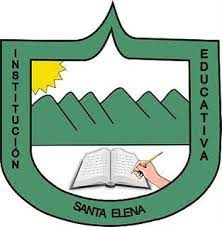

ReciPlanet
Actualmente en la Institución Educativa Santa Elena se genera gran cantidad de basura todos los días y que muchas veces no se les da el manejo adecuado. Si nosotros como comunidad educativa nos ponemos en la tarea de reciclar estaríamos limpiando y mejorando nuestra Institución
I.E.S.E
En nuestra Institución Educativa tiene que permanecer la limpieza, nuestro colegio es muy rural y eso hace que tengamos sentido de pertenencia y amor hacia nuestro colegio
Conocenos
Somos estudiantes del colegio Santa Elena, somos seguidores de la naturaleza, nuestro objetivo es orientar a toda comunidad educativa al buen uso de los residuos, esto con el proposito de limpiar nuestro entorno y disfrutar de un espacio limpio.